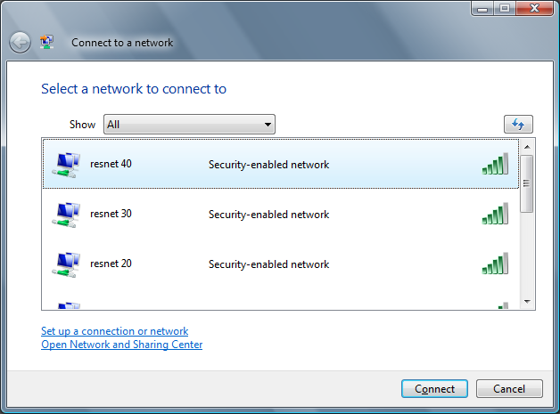
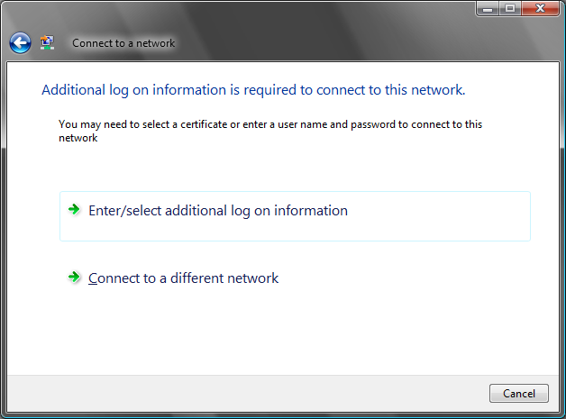
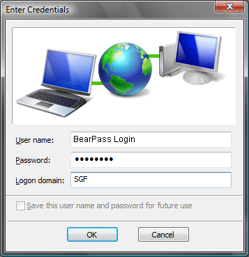
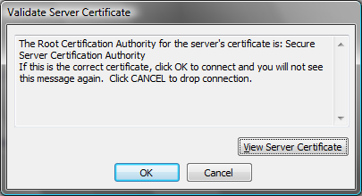
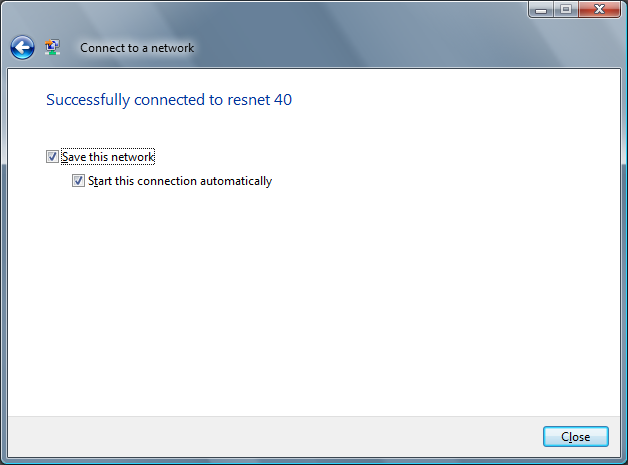

Windows Vista Wireless Setup
- To start configuring your wireless, click Start » Connect To.
- A box should open displaying all available wireless networks. Select MSU Resnet and then Connect.

- Select Enter/select additional log on information.

- To authenticate, enter the following information:
User Name: BearPass Login
Password: Missouri State Password
Logon domain: SGF.

- Select Enter/select additional log on information again.
- Select OK to accept the server certificate.

- You should now be connected to the MSU Resnet network. If this method does not work try connecting manually.
